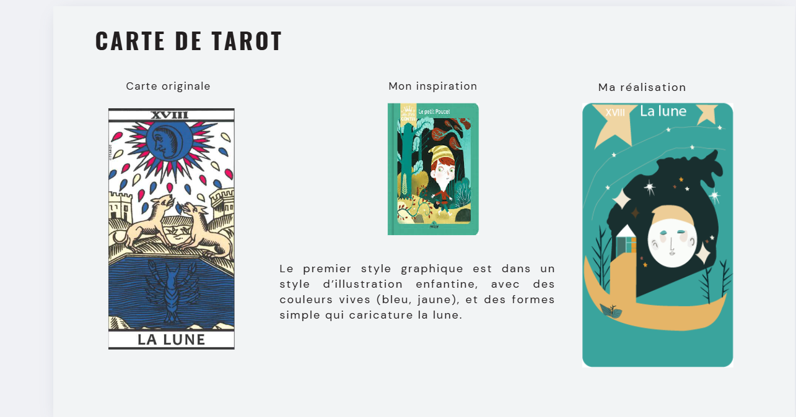
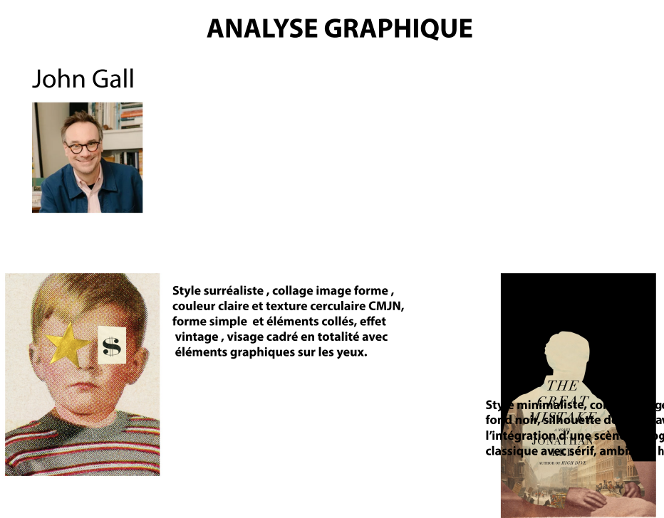
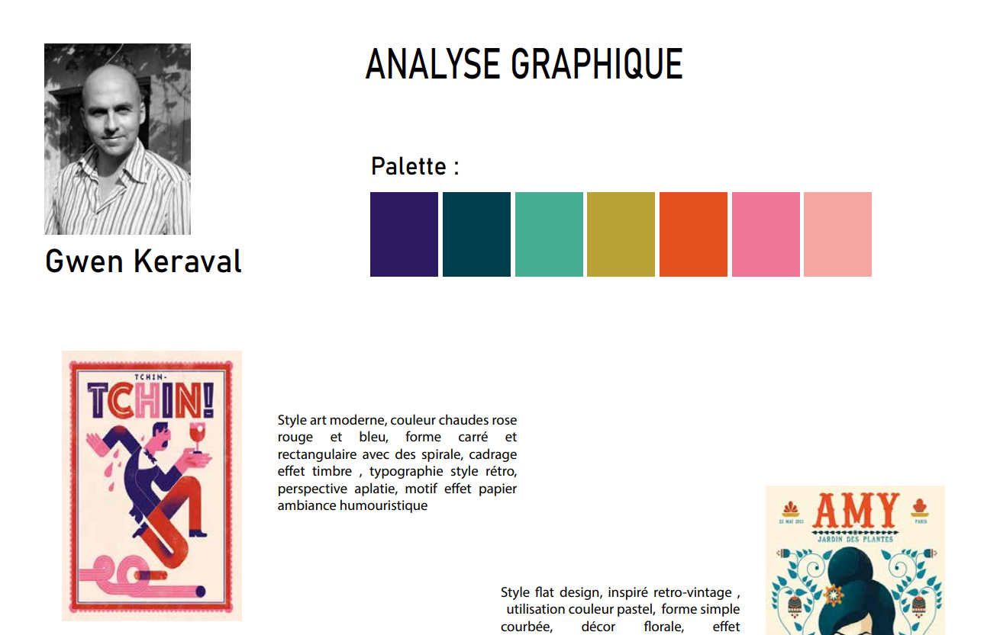
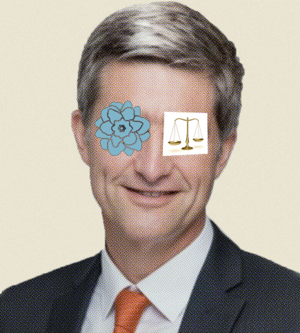
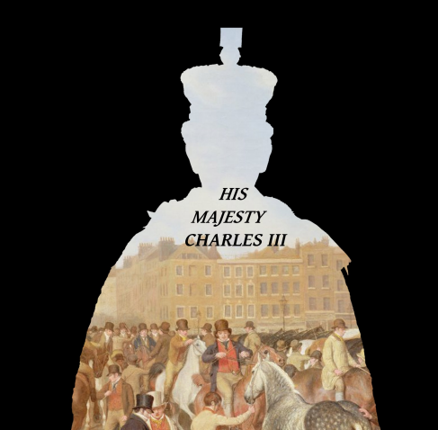
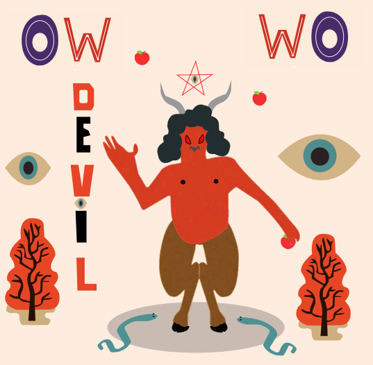
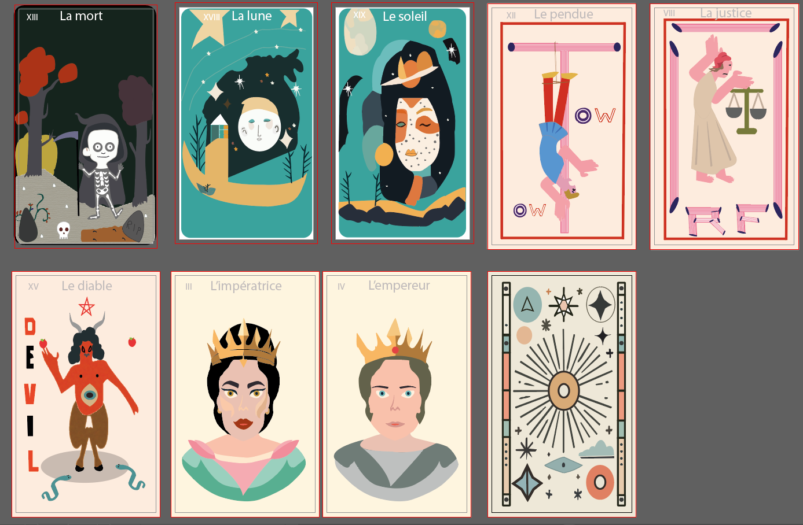
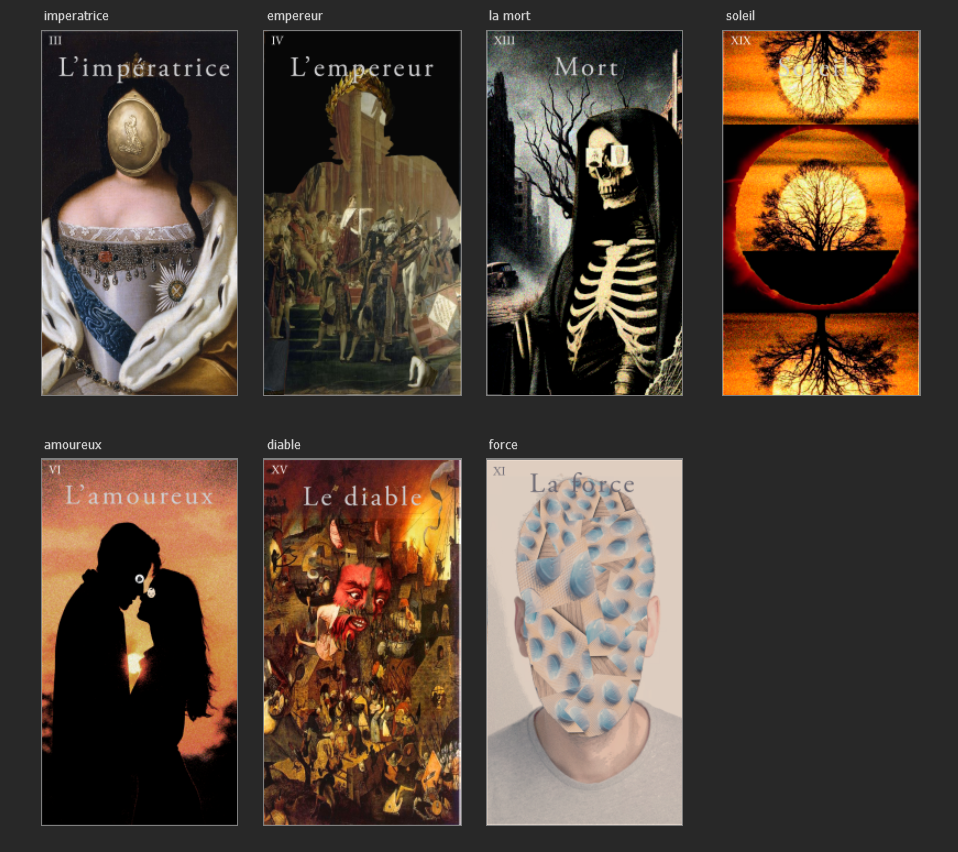

SAE 1.03 - Produire les éléments d'une communication visuelle
Réalisé en octobre 2024 dans le cadre du BUT MMI
Objectifs
- Combiner les ressources liées à la culture artistique et à la production graphique pour répondre à un cahier des charges
- Sensibiliser à la nécessité d'un travail de réflexion s'appuyant sur des dessins ou planches d'inspiration
- Savoir s'appuyer sur une culture artistique pour défendre un projet créatif et justifier ses choix
- Comprendre l'importance d'optimiser le format et le poids des productions en fonction des usages et supports de diffusion choisis

Démarche
Pour cette SAE, j'ai travaillé sur la recréation des différents arcanes (cartes) du Tarot de Marseille en m'inspirant de deux graphistes de référence. J'ai choisi Owen Keraval, un designer connu pour son style illustratif et détaillé, utilisant des formes simplifiées et géométriques avec beaucoup de couleurs, pour le rendu vectoriel sur Adobe Illustrator. Pour le rendu matriciel sur Photoshop, j'ai choisi un autre artiste John Gall spécialisés dans le collage d'objets sur des portraits.
- Phase 1 : Choix des styles
- Phase 2 : Analyse et recherches
- Phase 3 : Réalisations finales
Phase 1 : Choix des styles
J'ai commencé par choisir Gwen Keraval comme graphiste de référence pour le rendu vectoriel et un autre artiste pour le rendu matriciel. Ensuite, j'ai réalisé des planches d’exploration graphique en m'appropriant leurs techniques et styles. J'ai travaillé avec Adobe Illustrator pour les éléments vectoriels et Photoshop pour les éléments matriciels.


Phase 2 : Analyse et recherches sur le Tarot
J'ai étudié les représentations et signes des arcanes du Tarot de Marseille. J'ai réalisé des recherches graphiques (formats, couleurs, motifs, cadrages) en lien avec le style d'Owen Keraval pour le rendu vectoriel et de l'autre artiste pour le rendu matriciel, sans mélanger les styles.
Matriciel


Phase 3 : Réalisations finales
J'ai produit plusieurs arcanes en adoptant les techniques de réalisation d'Owen Keraval pour le rendu vectoriel et de l'autre artiste pour le rendu matriciel, tout en préservant l'originalité de ma propre interprétation. J'ai constitué deux jeux de cartes distincts, justifié un zoning cohérent pour l’architecture de l'information, et réalisé des exports optimisés pour différents supports de diffusion.
Vectoriel

Ressources utilisées
R1.08 : Production graphique
Cette ressource m'a aidé à élargir mes connaissances sur l'utilisation de Photoshop. J'ai appris à utiliser les masques et calques, des outils essentiels qui permettent d'apporter des modifications sans détruire l'image d'origine.
R1.09 : Culture artistique
Cette ressource m'a aidé à acquérir une compréhension des fonctionnalités d'Adobe Illustrator et à reproduire les techniques utilisées dans la création de mes cartes. Elle m'a également facilité la recherche d'images et d'artistes de référence.
Bilan
Ce projet a été une aide précieuse pour le développement de mes compétences en création numérique. Il m'a permis d'acquérir de nouvelles connaissances et de renforcer mes aptitudes dans ce domaine, ainsi que la bonne pratique dans l'utilisation des logiciels Adobe Illustrator et Adobe Photoshop. Malgré un manque d'inspiration pour certaines parties du projet, je pense avoir validé les compétences attendues.
Compétences développées
Produire des pistes graphiques et des planches d’inspiration
Créer, composer et retoucher des visuels
Optimiser les médias en fonction de leurs usages et supports de diffusion